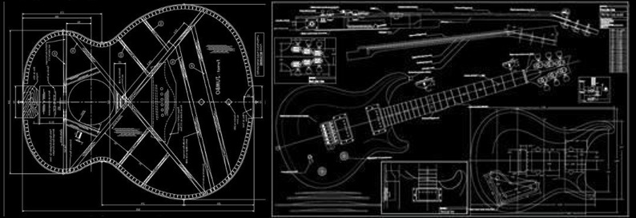

Beneficios extra de formar parte de nuestra familia de guitarras.
Además de adquirir una guitarra de calidad, hecha a mano por expertos luthiers y con los mejores materiales, Guitarras FlacoZeta te asegura que el mantenimiento (calibración, reformas y reparaciones) va a estar hecho por las mismas personas que fabricaron el instrumento. Te ofrecemos:
- Dos calibraciones anuales totalmente gratis.
- Descuentos en cuerdas, púas y correas.
- Asesoría integral para reformas posteriores de cada componente de tu instrumento.
- Acceso a clínicas para que los ajustes básicos los puedas hacer vos mismo si por algún motivo no podés acercarnos el instrumento.
- Clínicas de guitarra dictadas por celebridades del mundo de la guitarra, referentes de diversos géneros.